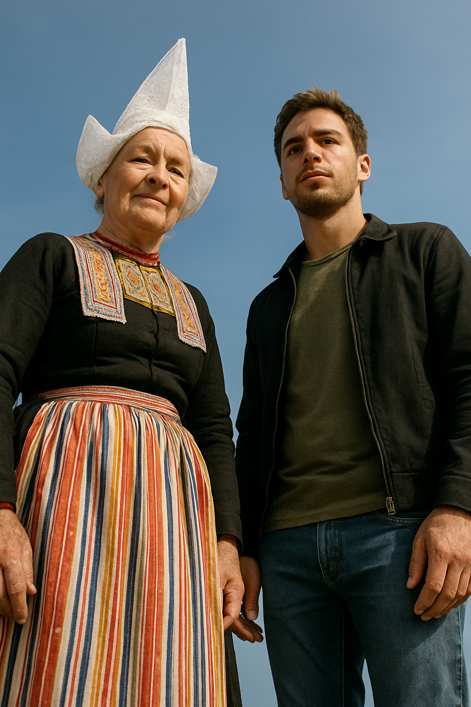
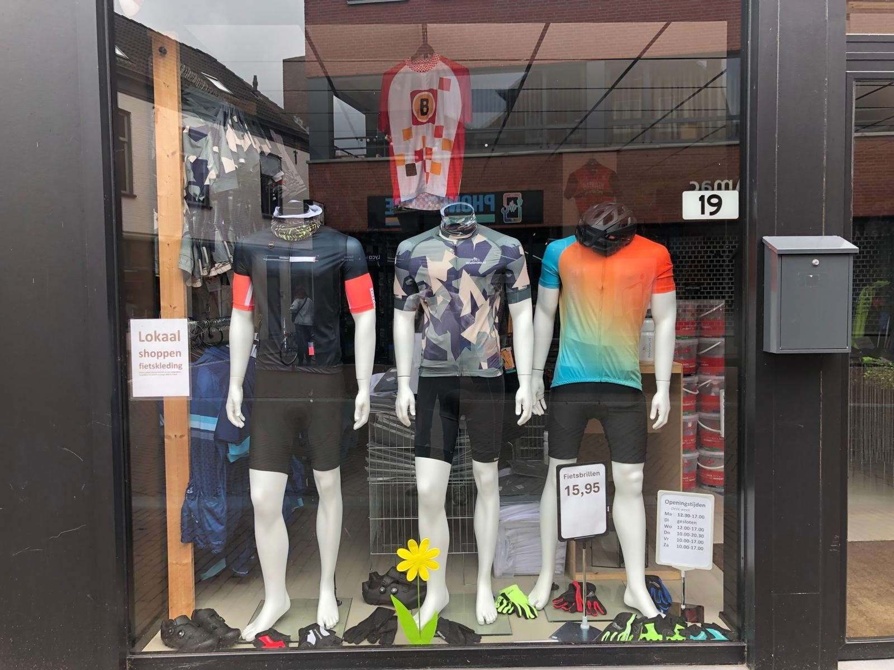
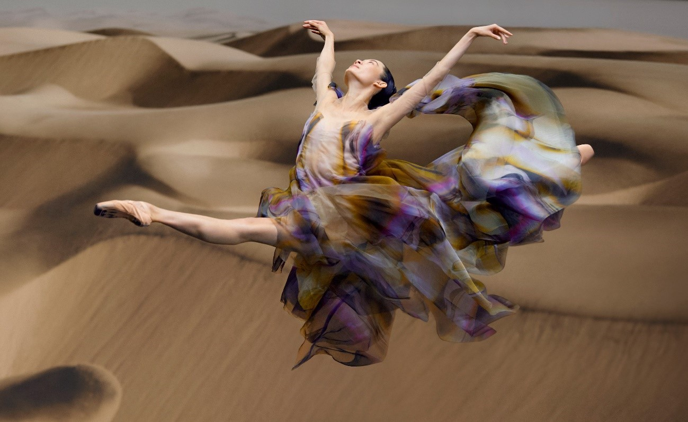
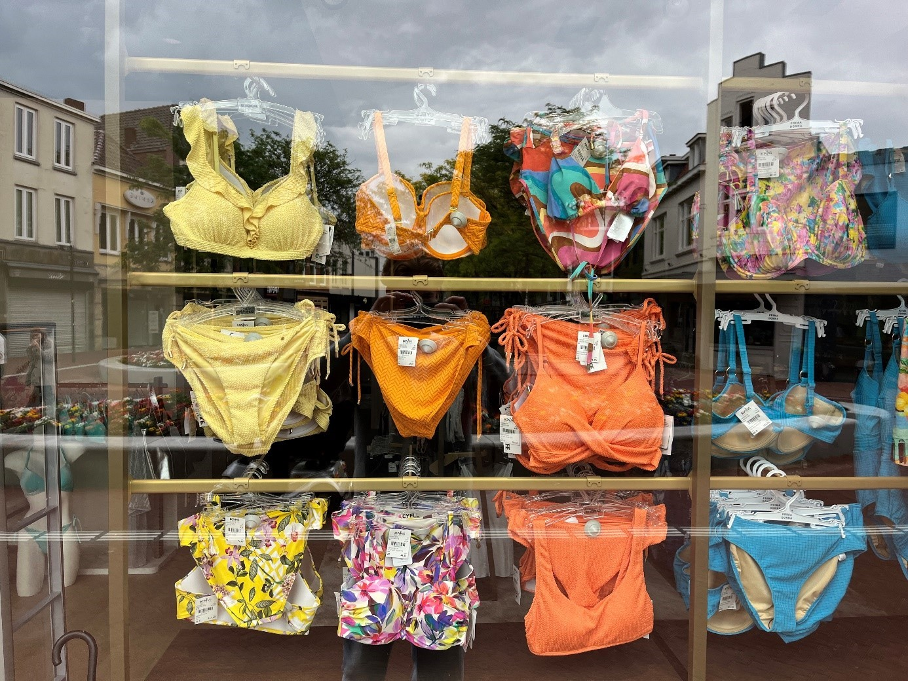
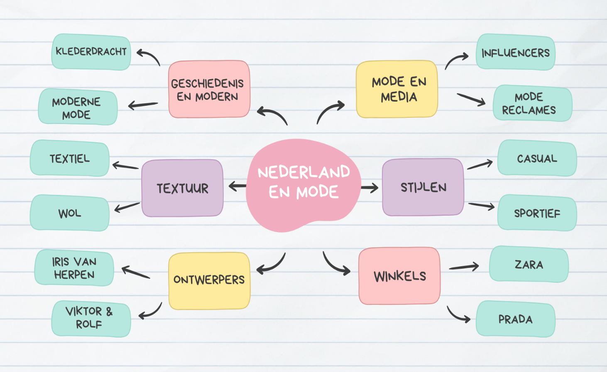

Photo 1
We chose to show a kind of relationship between old fashioned and modern. We had a sub-aspect called modern and history. The first thing we thought of when we thought of old is a traditional costume, not necessarily old, but has been around for a long time and looks very old-fashioned. When we think of a modern piece of clothing we thought of something that is now widely worn among young people. It’s amazing to see how different these two are from each other.
You see a good contrast between the past and the present. It gives you questions about how culture has changed or stayed the same in terms of clothing. Today traditional clothing still exist, but they are not as popular as modern clothing. The photo can show how old and new generations are connected.
The photo shows the difference between clothing from the past and that of today. In other words, how much culture can change in a few years.
The photo shows how history and culture are not lost, but rather find a place in the present, taking their culture with them in the future.
Photo 2
This photo shows a store where you can buy sport clothing, in particular cycling clothing. Which falls under the sports fashion category. The clothing pieces are very colorful and are full of designs. They have various colors to choose from. There is a wide range of sectors to choose from when it comes to the sports category. Think about like football jersey that you can buy to support your favorite football club. Sport brings people together and this has a positive effect on the social connection that people make through sport and hobbies.
This photo is a very realistic photo because it is a photo of a store display in the city. So it is very realistic, because in every city you have some sport clothing store. Which is good because it is a good way to interact with people who have the same interests as you.
Photo 3

We want to give a good overview of what clothing shops look like today. We think that many shops look the same, but we also know that there used to be very different shops. We think people would enjoy seeing such a photo, especially if they lived in a time when there were completely different shops.
The photo radiates a modern image, a shop that is structured. It is chic, neat and very contemporary. It shows what stores are like today, because who knows what the future will look like.
It shows how much we have grown in selling consumption compared to before. How shops give us peace and order, shopping is so much easier and more organized these days. Maybe it shows us how well the Netherlands is organized in things we use every day.
It shows us the daily life of people. You see people walking around looking for clothes. The clothes are put by colour and it gives us a typical Dutch image of a Dutch shop in the city.
Photo 4
On this picture you see a national ballerina who is performing a jeté in a beautiful and special dress. This dress is made by the famous fashion designer Iris van Herpen.
This picture radiates the sort of designs from Iris van Herpen. This is a special way of modelling the dress from Iris van Herpen, because you don't see very often that a real national ballerina models a dress while doing a grand jeté or doing ballet at all. That combines the beauty of the ballet with the fashion from Iris van Herpen.
It shows the beauty of two things in one picture put together. It shows the beauty of fashion and the beauty of dance and that you can combine those things and make one beautiful picture with it.
The photo represents the harmony between art forms — dance and fashion — highlighting how they can inspire and enhance each other. Together they portray the limitless possibilities of artistic expression.
Photo 5
This photo shows a shop window with many bikinis. The clothes are hanging on hangers behind the window. There are many different colours and patterns like orange, blue, and colourful flowers. Each bikini also got a price tag. The photo was taken from outside the shop, as you can see.
This photo gives a happy and summer feeling. The bright colours, make you think of the summer, beach and fun. It feels like the store wants to show that summer is coming and it’s time to buy swimwear. The strong colors in the swimwear stand out against the grey reflection of the sky. This contrast makes the photo more powerful. It’s like the swimsuits bring color and joy to a grey day.
Infographic
